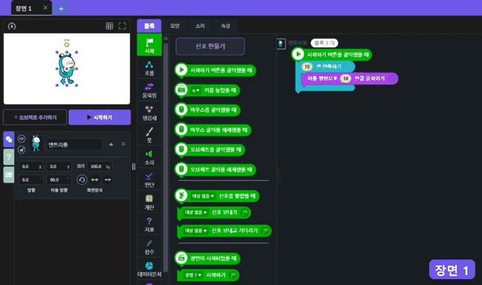
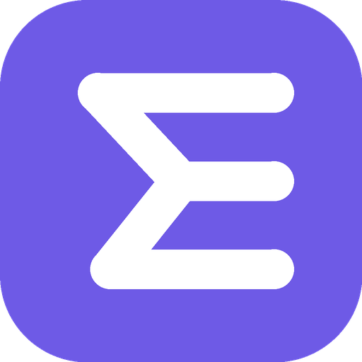
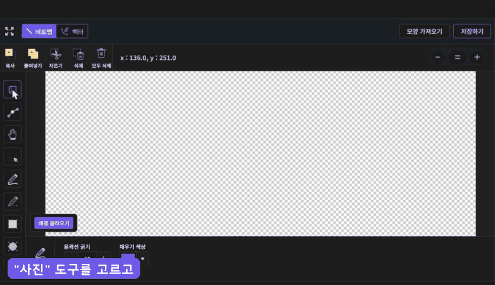
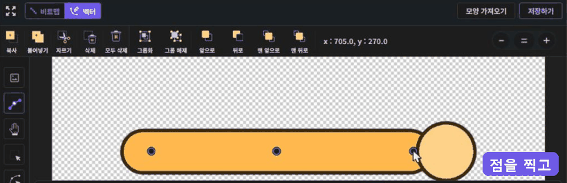
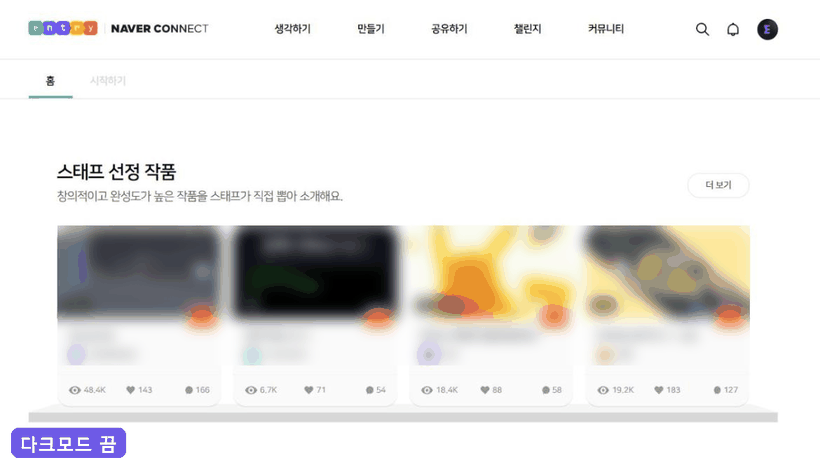

1.장면 시작 블록 자동 묶음
"장면이 시작되었을 때" 블록을 꺼내면, 옆에 "시작하기 버튼을 클릭했을 때 -> (지금 장면) 시작하기" 묶음이 저절로 생겨요. 장면마다 하나씩만 만들어 줘서, 장면을 따로 테스트할 때 매번 블록을 찾지 않아도 돼요.


엔트리를 더 쉽고 빠르게.
엔트리(playentry.org)를 쓰면서 불편했던 점들을 고쳐 보려고 만든 크롬 확장 프로그램이에요. 작품 만들기 도구와 다크모드가 들어 있고, 설치만 하면 바로 쓸 수 있어요. 기능마다 켜고 끌 수도 있어요.
"장면이 시작되었을 때" 블록을 꺼내면, 옆에 "시작하기 버튼을 클릭했을 때 -> (지금 장면) 시작하기" 묶음이 저절로 생겨요. 장면마다 하나씩만 만들어 줘서, 장면을 따로 테스트할 때 매번 블록을 찾지 않아도 돼요.

모양 그림판에 따라 그릴 사진을 깔 수 있어요. 왼쪽 도구 막대에 생긴 "사진" 도구로 배경을 불러오고, 투명도를 조절한 뒤 그 위에 따라 그리면 돼요. 배경은 그림 아래에 깔리고, 모양을 저장할 때는 들어가지 않아요. 엔트리 도구로는 배경이 움직이거나 지워지지 않아서 마음 놓고 그릴 수 있어요.

벡터 그림에 "구부리기" 도구로 점을 찍고 끝점을 끌면, 팔이나 다리처럼 부드럽게 구부러져요. 외곽선과 색칠이 함께 움직여서 모양이 그대로 유지되고, 도형을 먼저 선택하면 그 도형만 구부릴 수 있어요. "늘이고 줄이기", "방향 반대로"도 고를 수 있고, Ctrl+Z로 되돌릴 수 있어요. 점 2개로도 구부릴 수 있어요.

메인, 커뮤니티, 작품 만들기, 작품 실행 화면까지 엔트리의 모든 화면을 어둡게 바꿔요. 엔트리의 초록색과 파란색은 보라(기본), 초록, 흰색, 회색, 남색 중 원하는 색으로 바꿀 수 있어요. 블록 색, 작품 무대, 내가 그린 그림과 사진은 그대로 둬요. 작은 버튼과 글자들까지 전부 다크모드를 적용해요.
글쓰기 화면에서는 검은 글씨와 흰 글씨만 화면에서 서로 바꿔 보여 줘요. 실제 글 색은 그대로라서 다크모드를 쓰지 않는 사람에게도 글이 원래대로 잘 보여요.

브라우저 화면 크기를 67% 이하로 줄이면 그림판 색깔 팝업의 색상, 채도, 명도 막대가 팝업 밖으로 밀려나던 엔트리 버그를 고쳤어요.
chrome://extensions 입력설치한 뒤 엔트리 페이지를 새로고침하면 바로 적용돼요. 브라우저 오른쪽 위 확장 프로그램 아이콘을 누르면 기능마다 켜고 끌 수 있어요.
"엔트리"와 엔트리 로고는 네이버 커넥트재단의 상표예요.
만든 사람: 네온트리